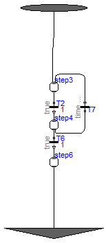

Utility models used in the examples
Package Content

Information
Extends from Modelica_StateGraph2.PartialParallel (Partial compont to construct a parallel submodel via inheritance).
Parameters
| Type | Name | Default | Description |
|---|
| Boolean | initialStep | false | =true, if initial step (start state machine at entry ports of Parallel) |
| Boolean | use_suspend | true | =true, if suspend and resume ports enabled |
| Boolean | use_activePort | false | =true, if activePort enabled |
Connectors
| Type | Name | Description |
|---|
| Step_in | inPort[nIn] | If enabled, port for one or more input transitions |
| Step_out | outPort[nOut] | If enabled, port for one or more output transitions |
| Composite_resume | resume[nResume] | If enabled, port for zero, one or more resume transitions |
| Composite_suspend | suspend[nSuspend] | If enabled, port for zero, one or more suspend transitions |
| output BooleanOutput | activePort | = true if Parallel component is active, otherwise it is not active |
Modelica definition
model Composite2_Subgraph
extends Modelica_StateGraph2.PartialParallel( final
use_inPort, final
use_outPort, nEntry=1, nExit=1);
Modelica_StateGraph2.Step step3(
nOut=1, nIn=2);
Modelica_StateGraph2.Transition T2(
delayedTransition=true, waitTime=1);
Modelica_StateGraph2.Step step4(
nOut=2, nIn=1);
Modelica_StateGraph2.Transition T6(
delayedTransition=true, waitTime=1);
Modelica_StateGraph2.Step step6(
nOut=nExit,
nIn=1);
Modelica_StateGraph2.Transition T7( waitTime=1,
delayedTransition=false,
condition=time > 2.5 and time < 4.5);
equation
connect(step3.outPort[1], T2.inPort);
connect(T2.outPort, step4.inPort[1]);
connect(T6.outPort, step6.inPort[1]);
connect(T6.inPort, step4.outPort[1]);
connect(step4.outPort[2], T7.inPort);
connect(step3.inPort[1], entry[1]);
connect(T7.outPort, step3.inPort[2]);
connect(step6.outPort[1], exit[1]);
end Composite2_Subgraph;
Automatically generated Fri Nov 12 17:26:49 2010.